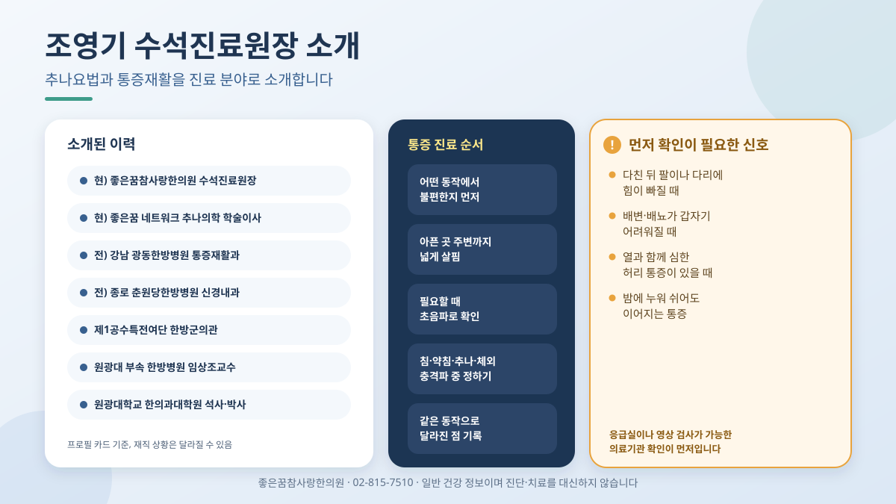

이종호 한의사 감수좋은꿈참사랑한의원 대표원장 (한의사 면허번호 19769)발행 2026-11-23 · 수정 2026-11-25
이 글의 차례
좋은꿈참사랑한의원의 조영기 수석진료원장은 추나요법과 통증재활을 진료 분야로 소개하고 있으며, 원광대학교 한의과대학원에서 석사·박사 과정을 마친 이력이 프로필 카드에 기재되어 있습니다.
소개된 이력
- 현) 좋은꿈참사랑한의원 수석진료원장
- 현) 좋은꿈 네트워크 추나의학 학술이사
- 전) 강남 광동한방병원 통증재활과 진료원장
- 전) 종로 춘원당한방병원 신경내과 진료원장
- 육군특수전사령부 제1공수특전여단 한방군의관
- 원광대학교 부속 한방병원 임상조교수, 내과전문의
- 원광대학교 한의과대학원 석사 및 박사
위 내용은 프로필 카드 기준이며, 재직 상황은 달라질 수 있습니다. 사진과 함께 정리한 조영기 수석진료원장 소개 페이지도 있습니다.
왜 진료하는 원장의 이력을 확인해 두면 좋을까요
어떤 원장에게 진료를 받는지 미리 알면, 상담에서 무엇을 먼저 여쭐지 정리하기가 쉬워집니다. 목·허리처럼 움직임과 관련된 불편이라면 추나요법·통증재활을 진료 분야로 소개하는 원장에게 어떤 동작이 불편한지부터 말씀해 주시면 됩니다.
원장마다 진료 요일이 다를 수 있으니, 특정 원장에게 진료를 받고 싶으시면 예약할 때 전화(02-815-7510)로 확인해 주세요.
진료 분야로 소개된 영역
추나요법과 통증재활입니다. 소개된 진료 분야가 특정 결과를 약속한다는 뜻은 아닙니다.
통증 진료는 이렇게 진행됩니다
"어디가 아프다"보다 "어떤 동작에서 불편한가"를 먼저 여쭙니다. 아픈 곳만이 아니라 주변까지 넓게 살피고, 필요하다고 판단될 때 초음파로 확인한 뒤 침, 약침, 추나, 체외충격파 가운데 상태에 맞는 방법을 정합니다. 치료 뒤에는 같은 동작으로 달라진 점을 기록해 두고 다음 진료에서 이어서 여쭙니다.
이렇게 기록해 오시면 상담이 쉬워집니다
- 어디가 언제부터 아픈지 적은 메모
- 가지고 있는 MRI·X-ray 자료
- 가장 불편한 동작 한두 가지(예: 계단 내려가기, 고개 돌리기)
- 복용 중인 진통제와 다른 약
- 이전에 받은 추나나 물리치료의 내용과 그 뒤의 변화
이런 증상은 먼저 확인이 필요합니다
- 다친 뒤 다리나 팔에 힘이 빠지는 경우
- 배변이나 배뇨가 갑자기 어려워진 경우
- 열과 함께 심한 허리 통증이 있는 경우
- 밤에 누워 쉬어도 가라앉지 않고 이어지는 통증
이런 경우는 응급실이나 영상 검사가 가능한 의료기관 확인이 먼저입니다. 복용 중인 약은 처방한 의사와 상의 없이 끊지 마세요.

먼저 확인이 필요한 신호
- 다친 뒤 다리나 팔에 힘이 빠지는 경우
- 배변이나 배뇨가 갑자기 어려워진 경우
- 열과 함께 심한 허리 통증이 있는 경우
소개된 이력
- 현) 좋은꿈참사랑한의원 수석진료원장
- 현) 좋은꿈 네트워크 추나의학 학술이사
왜 진료하는 원장의 이력을 확인해 두면 좋을까요
- 어떤 원장에게 진료를 받는지 미리 알면, 상담에서 무엇을 먼저 여쭐지 정리하기가 쉬…
- 목·허리처럼 움직임과 관련된 불편이라면 추나요법·통증재활을 진료 분야로 소개하는 원…
진료 분야로 소개된 영역
- 교정추나 안내
- 초음파 진단 안내
자주 묻는 질문
추나는 몇 번 받아야 하나요?
상태에 따라 달라 진찰 후 안내하며 정해진 횟수를 약속하지 않습니다.
추나가 보험이 되나요?
적용 여부는 진찰 후 안내합니다. (추나 건강보험 안내)
영상 자료가 없어도 진료받을 수 있나요?
네. 불편한 동작을 먼저 살피고, 필요하다고 판단되면 초음파로 확인하거나 영상 검사가 가능한 의료기관을 안내합니다.
추나는 아프지 않나요?
몸 상태를 보며 힘을 조절하고, 불편하면 바로 말씀해 주시면 멈춥니다.
좋은꿈참사랑한의원은 재진 때 지난번 이야기부터 이어서 여쭙니다. 진료시간과 예약은 오시는 길에서 확인하세요.
어디서 상담받을 수 있나요?
좋은꿈참사랑한의원은 서울 동작구 만양로2길 2 신성빌딩 3층·5층(서울 동작구 상도동, 7호선 상도역 3번 출구 근처)에 있습니다. 한의사 3명(이종호 대표원장, 조영기 수석진료원장, 정원영 진료원장)이 진료합니다. 진료시간은 평일 09:30~20:00(점심 13:00~14:00), 토·일·공휴일 09:30~15:00이며, 방문 전 전화로 확인을 권합니다. 예약은 네이버 예약, 카카오톡 상담, 전화 02-815-7510로 받습니다.
이 글은 일반적인 건강 정보이며 개인의 진단이나 치료를 대신하지 않습니다. 증상이 있거나 복용 중인 약이 있다면 진료를 통해 확인하세요. 치료 효과는 개인마다 다를 수 있습니다.
작성 기준: 일반적으로 알려져 있는 건강 정보를 참고해 정리했습니다(대표원장 감수). 증상 기록은 1~2주 동안 하루 1회, 비슷한 시간에 적어 오시면 지난 상태와 비교하기 쉽습니다.